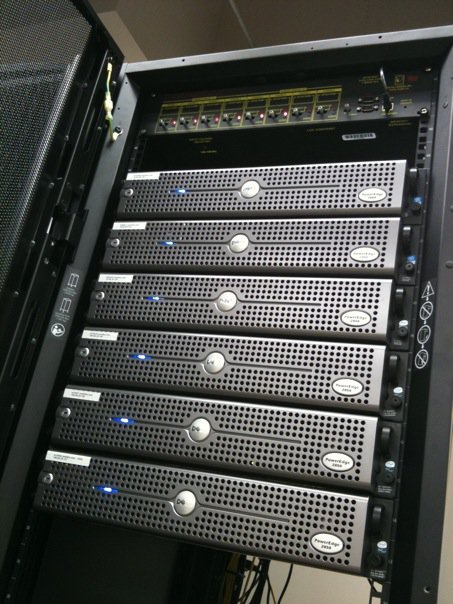

CFGS Administración de Sistemas Informáticos y en Red (1º curso)
Material elaborado para el módulo 0371. Fonaments de Maquinari / Fundamentos de Hardware
Sistemas informáticos en entornos empresariales
Programación de Aula
Resultados de Aprendizaje
Esta unidad trabaja el Resultado de Aprendizaje 4 (RA4) del módulo, según el Real Decreto 1629/2009 (Anexo I, módulo Fundamentos de Hardware):
- RA4. Implanta hardware específico de centros de proceso de datos (CPD), analizando sus características y aplicaciones.
Según la programación de aula, esta unidad (UT4) se evalúa sobre los criterios CE18, CE41, CE42, CE43, CE44, CE45, CE46, CE47, CE48 y CE49, cuya redacción literal es:
- CE18 (RA1.h): Se han clasificado los dispositivos periféricos y sus mecanismos de comunicación.
- CE41 (RA4.g): Se han documentado procedimientos, incidencias y parámetros utilizados en la instalación y configuración de dispositivos hardware.
- CE42 (RA4.h): Se han utilizado herramientas de inventariado, registrando las características de los dispositivos hardware.
- CE43 (RA4.i): Se ha clasificado y organizado la documentación técnica, controladores, utilidades y accesorios del hardware.
- CE44 (RA5.a): Se han identificado los riesgos y el nivel de peligrosidad que suponen la manipulación de los materiales, herramientas, útiles, máquinas y medios de transporte.
- CE45 (RA5.b): Se han operado las máquinas respetando las normas de seguridad.
- CE46 (RA5.c): Se han identificado las causas más frecuentes de accidentes en la manipulación de materiales y herramientas, entre otras.
- CE47 (RA5.d): Se han descrito los elementos de seguridad de las máquinas y los equipos de protección individual que se deben emplear.
- CE48 (RA5.e): Se ha relacionado la manipulación de materiales, herramientas y máquinas con las medidas de seguridad y protección personal requeridos.
- CE49 (RA5.f): Se han identificado las posibles fuentes de contaminación del entorno ambiental.
Esto confirma que el RA4 (implantación de hardware de CPD) se trabaja junto con criterios del RA5 (prevención de riesgos laborales), coherente con que las tareas de esta unidad implican manipulación física de equipos.
Ponderación de esta unidad
Según el cuadro de ponderaciones de la programación del módulo, UT4 (Sistemes informàtics en entorns empresarials) aporta un 14% de la nota final del módulo, correspondiente al 100% del RA4.
También según la programación, el RA4 es el único que se trabaja parcialmente en la formación en empresa (FCT/formació en empresa), con un 16% del total del módulo.
Planificación Temporal (6 sesiones / 12 horas)
| Sesión | Contenido |
|---|---|
| 1 | El Centro de Procesamiento de Datos (CPD): concepto, niveles Tier y estructura |
| 2 | Racks, armarios y cableado estructurado |
| 3 | Servidores: tipos, características y gestión remota |
| 4 | Almacenamiento empresarial: NAS y SAN |
| 5 | Alimentación (SAI/PDU) y climatización del CPD |
| 6 | Seguridad física y alta disponibilidad. Repaso y ejercicios |
1. El Centro de Procesamiento de Datos (CPD)
Un CPD (Centro de Procesamiento de Datos, o Data Center en inglés) es una instalación especializada donde se concentran los recursos informáticos necesarios para el funcionamiento de una organización: servidores, sistemas de almacenamiento, equipos de red y toda la infraestructura de soporte (alimentación, refrigeración, seguridad) que los mantiene operativos de forma continua.
A diferencia de un ordenador de sobremesa doméstico, el hardware de un CPD está diseñado para funcionar 24 horas al día, 365 días al año, priorizando la fiabilidad, la redundancia y la facilidad de mantenimiento sobre otros factores como el precio o el diseño estético.
1.1 Niveles de fiabilidad (Tier)
El Uptime Institute clasifica los CPD en 4 niveles de fiabilidad, según su grado de redundancia:
| Nivel | Disponibilidad garantizada | Características |
|---|---|---|
| Tier I | ~99,67% (≈29h de parada/año) | Sin redundancia; una única ruta de alimentación y refrigeración |
| Tier II | ~99,75% (≈22h de parada/año) | Componentes redundantes, pero una única ruta de distribución |
| Tier III | ~99,98% (≈1,6h de parada/año) | Múltiples rutas de distribución, se puede hacer mantenimiento sin parar el servicio |
| Tier IV | ~99,99% (≈26min de parada/año) | Tolerante a fallos: ningún fallo individual interrumpe el servicio |
1.2 Tipos de CPD según su propiedad y uso
- CPD corporativo (on-premise): propiedad y gestión de la propia empresa, dentro de sus instalaciones.
- CPD en colocation (housing): la empresa alquila espacio físico (racks, alimentación, refrigeración) en unas instalaciones de terceros, pero mantiene la propiedad y gestión de sus propios servidores.
- Nube pública (cloud): el proveedor (AWS, Azure, Google Cloud...) es propietario de todo el hardware, y el cliente contrata recursos de cómputo y almacenamiento bajo demanda, sin tener acceso físico a las máquinas.
2. Racks, armarios y cableado estructurado

Un rack o armario estandarizado permite alojar de forma ordenada servidores, switches y sistemas de almacenamiento.
Los equipos de un CPD no se colocan sueltos, sino en racks (armarios metálicos normalizados) que permiten organizarlos de forma vertical, ahorrando espacio y facilitando su ventilación, cableado y mantenimiento.
2.1 La unidad de rack (U)
La altura de los equipos que se instalan en un rack se mide en unidades de rack (U), donde 1U equivale a 1,75 pulgadas (4,45 cm) de altura. Un servidor puede ocupar, por ejemplo, 1U (muy compacto), 2U o 4U (más espacio interno para discos y refrigeración). Un rack estándar completo suele tener 42U de altura disponible, con una anchura interior normalizada de 19 pulgadas.
2.2 Cableado estructurado
El cableado estructurado es un sistema de cableado organizado y documentado que permite conectar todos los equipos de una instalación de forma ordenada, normalmente distribuido en:
- Cableado horizontal: conecta cada puesto de trabajo o dispositivo con el armario de distribución de su planta.
- Cableado vertical (backbone): conecta entre sí los distintos armarios de distribución del edificio, y estos con el CPD central.
Un buen cableado estructurado, correctamente etiquetado, es fundamental para poder diagnosticar averías y hacer cambios sin perder tiempo "siguiendo cables" a mano.
2.3 Elementos del cableado en el rack
- Paneles de parcheo (patch panels): concentran todas las líneas de red que llegan al rack, permitiendo conectar cada una a un switch mediante latiguillos cortos, sin manipular directamente el cableado de la instalación.
- Organizadores de cable: guías horizontales y verticales que mantienen ordenados los latiguillos, evitando que bloqueen la ventilación o dificulten futuras intervenciones.
- Etiquetado normalizado: cada cable y cada puerto debe estar identificado de forma única, siguiendo un estándar de nomenclatura documentado (por ejemplo, indicando armario, panel y número de puerto).
3. Servidores
Un servidor es un ordenador diseñado específicamente para ofrecer servicios y recursos a otros equipos (clientes) a través de una red, funcionando de forma ininterrumpida. Aunque comparte los mismos elementos funcionales que un PC de sobremesa (CPU, memoria, almacenamiento...), sus componentes están pensados para la fiabilidad y el funcionamiento continuo:
| Característica | PC de sobremesa | Servidor |
|---|---|---|
| CPU | Orientada al rendimiento monousuario | Múltiples núcleos, soporte multiprocesador, orientada a cargas concurrentes |
| Memoria | Sin corrección de errores | Memoria ECC (Error-Correcting Code), que detecta y corrige errores de bit automáticamente |
| Almacenamiento | Uno o pocos discos | Varios discos en RAID, a menudo intercambiables en caliente (hot-swap) |
| Fuente de alimentación | Una única fuente | Fuentes redundantes (si falla una, la otra sigue dando servicio) |
| Gestión remota | No suele tener | Tarjeta de gestión remota (iLO, iDRAC...) para administrar el servidor aunque esté apagado o sin sistema operativo |
3.1 Formatos de servidor
- Servidor torre: similar en aspecto a un PC de sobremesa grande; adecuado para empresas pequeñas con pocos equipos.
- Servidor rack: formato plano pensado para instalarse en un armario rack; permite concentrar muchos servidores en poco espacio.
- Servidor blade: módulos muy compactos que se insertan en un chasis común (enclosure), compartiendo elementos como la alimentación o la refrigeración entre varios servidores, maximizando la densidad de cómputo.
Recuerda
La disponibilidad de piezas hot-swap (discos, fuentes, incluso ventiladores) permite sustituir un componente averiado sin apagar el servidor, evitando interrupciones del servicio.
3.2 Gestión remota (out-of-band management)
Una de las diferencias más importantes de un servidor frente a un PC normal es la tarjeta de gestión remota (conocida comercialmente como iLO en HPE, iDRAC en Dell, o IPMI de forma genérica). Esta tarjeta funciona de forma independiente al sistema operativo y a la propia CPU principal, con su propia conexión de red, lo que permite:
- Encender o apagar el servidor de forma remota, aunque esté completamente apagado.
- Acceder a la consola gráfica del servidor como si se estuviera delante (KVM remoto), incluso para reinstalar el sistema operativo desde cero.
- Consultar sensores de temperatura, ventiladores y alimentación, incluso con el servidor apagado.
- Recibir alertas automáticas ante fallos de hardware.
3.3 Consolidación de servidores
Antes de la virtualización generalizada, era habitual dedicar un servidor físico a cada servicio (uno para el correo, otro para la web, otro para la base de datos...), lo que suponía un desaprovechamiento enorme de recursos, ya que la mayoría de esos servidores pasaban gran parte del tiempo con la CPU casi inactiva. La consolidación de servidores mediante virtualización permite ejecutar varios de esos servicios como máquinas virtuales sobre un número mucho menor de servidores físicos, reduciendo el coste de hardware, espacio, alimentación y climatización.
4. Almacenamiento empresarial: NAS y SAN
En un entorno empresarial, el almacenamiento casi nunca está "dentro" de un único servidor, sino centralizado en sistemas dedicados a los que acceden varios servidores a la vez:
| Sistema | Significado | Cómo se accede | Uso típico |
|---|---|---|---|
| NAS (Network Attached Storage) | Almacenamiento conectado a la red | A nivel de archivo, a través de la red (protocolos como SMB o NFS), como si fuera una carpeta compartida | Compartir archivos entre usuarios, copias de seguridad |
| SAN (Storage Area Network) | Red de área de almacenamiento | A nivel de bloque, a través de una red dedicada de alta velocidad (Fibre Channel o iSCSI) | Almacenamiento de alto rendimiento para bases de datos y servidores virtualizados |
Diferencia clave
Un NAS es como un disco duro compartido en red: el sistema operativo del servidor "ve" carpetas y archivos. Una SAN, en cambio, hace que el servidor "vea" el almacenamiento como si fuera un disco propio interno, permitiendo un rendimiento mucho mayor, típico de entornos de virtualización o bases de datos exigentes.
4.1 Protocolos de una SAN
- Fibre Channel (FC): red dedicada de altísimo rendimiento, con su propio cableado de fibra óptica y su propia electrónica de red (switches FC), separada de la red Ethernet habitual. Es la opción de mayor rendimiento, pero también la más costosa.
- iSCSI: transporta el mismo tipo de tráfico de bloque que Fibre Channel, pero sobre una red Ethernet convencional, lo que reduce mucho el coste al no requerir hardware específico, a cambio de un rendimiento algo menor.
4.2 RAID en el almacenamiento empresarial
El concepto de RAID, visto en la UT2 para un equipo individual, es aún más relevante en sistemas de almacenamiento empresarial (NAS/SAN), donde suelen combinarse muchos discos. Los niveles más habituales en este contexto son RAID 5 y RAID 6 (este último tolera el fallo simultáneo de hasta dos discos), o combinaciones como RAID 10 (que combina mirroring y striping para máximo rendimiento y seguridad a la vez).
5. Alimentación eléctrica del CPD
5.1 El SAI (Sistema de Alimentación Ininterrumpida)
Un SAI (o UPS, Uninterruptible Power Supply) es un equipo que proporciona energía eléctrica durante un corte de suministro, el tiempo suficiente para que los sistemas se apaguen de forma ordenada o para que entre en funcionamiento un generador auxiliar.
| Tipo de SAI | Funcionamiento | Nivel de protección |
|---|---|---|
| Off-line (standby) | Solo entra en acción cuando falla la corriente | Básico, con un pequeño corte de milisegundos al conmutar |
| Line-interactive | Regula pequeñas variaciones de tensión sin usar la batería | Intermedio |
| On-line (de doble conversión) | Regenera constantemente la corriente eléctrica, la carga nunca ve la red directamente | Máximo, sin ningún corte al fallar la red |
5.2 El PDU (Power Distribution Unit)
Un PDU es, básicamente, una "regleta" inteligente de rack que distribuye la energía eléctrica a todos los equipos instalados en él, permitiendo a menudo monitorizar el consumo e incluso apagar/encender remotamente tomas individuales.
5.3 Redundancia eléctrica
En instalaciones críticas es habitual disponer de doble acometida eléctrica, generadores diésel de respaldo (capaces de mantener el CPD funcionando durante días), y servidores con doble fuente de alimentación, cada una conectada a un circuito eléctrico distinto (a menudo también a un PDU y SAI distintos), para que un fallo en un único punto no deje sin servicio al CPD. A este diseño se le conoce como redundancia 2N (dos sistemas completos e independientes).
6. Climatización del CPD
La densidad de equipos de un CPD genera una cantidad de calor muy superior a la de una oficina normal, por lo que requiere sistemas de climatización de precisión, capaces de mantener una temperatura y humedad estables las 24 horas, muy distintos de un aire acondicionado doméstico.
6.1 Pasillo frío / pasillo caliente
Una técnica muy habitual es la organización en pasillo frío / pasillo caliente: los racks se colocan enfrentados de forma que todas las tomas de aire frío de los equipos miran hacia un mismo pasillo (donde se inyecta aire frío) y todas las salidas de aire caliente miran hacia el pasillo opuesto (por donde se extrae), evitando que el aire caliente de un rack se mezcle con el aire frío que necesita otro. En instalaciones más avanzadas, estos pasillos se confinan físicamente (con puertas y techos) para maximizar la eficiencia.
6.2 Free cooling
Cuando la temperatura exterior lo permite, muchos CPD modernos utilizan free cooling: en lugar de enfriar el aire mecánicamente con un compresor (que consume mucha electricidad), aprovechan directamente el aire frío del exterior (filtrado) para refrigerar la sala, reduciendo drásticamente el consumo energético en climas fríos.
6.3 El indicador PUE
La eficiencia energética de un CPD se mide habitualmente con el indicador PUE (Power Usage Effectiveness): la relación entre la energía total consumida por la instalación y la energía que realmente llega a los equipos informáticos. Un PUE de 1,0 sería el ideal teórico (toda la energía va a los equipos, ninguna se pierde en refrigeración o distribución); en la práctica, los CPD modernos más eficientes rondan valores de 1,1-1,3.
7. Seguridad física del CPD
Además de la seguridad informática (que se trata en otros módulos), un CPD requiere medidas de seguridad física:
- Control de acceso: tarjetas, biometría (huella dactilar, reconocimiento facial) o códigos que restringen quién puede entrar físicamente a la sala, a menudo combinando varios factores.
- Esclusa de seguridad (mantrap): en instalaciones de alta seguridad, una pequeña cámara con dos puertas que nunca se abren simultáneamente, impidiendo que una persona no autorizada entre "colándose" justo detrás de otra.
- Videovigilancia de la instalación, con grabación continua.
- Sistemas de extinción de incendios específicos (gases inertes como el FM-200 o el CO₂), que apagan un fuego sin dañar los equipos electrónicos, a diferencia del agua.
- Detección temprana de humo mediante sistemas de aspiración de aire de alta sensibilidad, capaces de detectar un principio de incendio antes de que sea visible.
8. Alta disponibilidad
La alta disponibilidad (High Availability, HA) es el conjunto de técnicas orientadas a que un servicio siga funcionando incluso si falla alguno de sus componentes:
- Redundancia N+1: se dispone de un componente (o servidor) de más de los estrictamente necesarios, de forma que si uno falla, el sistema sigue funcionando con normalidad mientras se repara el fallo.
- Clustering: varios servidores trabajan de forma coordinada como si fueran uno solo; si uno falla, otro asume su carga de trabajo automáticamente (failover).
- Balanceo de carga: reparte las peticiones entrantes entre varios servidores, mejorando tanto el rendimiento como la tolerancia a fallos.
Virtualización y hardware de CPD
Buena parte del hardware de un CPD moderno se dedica a servidores de virtualización: máquinas físicas potentes (muchos núcleos y mucha memoria RAM) sobre las que se ejecutan decenas de máquinas virtuales, optimizando el aprovechamiento del hardware disponible.
8.1 Recuperación ante desastres (Disaster Recovery)
Además de la alta disponibilidad dentro de un mismo CPD, muchas organizaciones disponen de un CPD secundario (a menudo en otra ubicación geográfica), al que replicar los datos y servicios críticos, para poder seguir funcionando aunque el CPD principal quede completamente destruido o inaccesible (por ejemplo, tras un incendio o una catástrofe natural). Para planificar esta recuperación se emplean dos indicadores clave:
| Indicador | Significado |
|---|---|
| RTO (Recovery Time Objective) | Tiempo máximo aceptable que puede tardar el servicio en volver a estar operativo tras un desastre |
| RPO (Recovery Point Objective) | Cantidad máxima de datos que la organización puede permitirse perder, medida en tiempo (por ejemplo, "como máximo, los últimos 15 minutos de datos") |
Ejercicios prácticos
Tarea
Ejercicio 1. Explica con tus propias palabras qué es un CPD y en qué se diferencia, en cuanto a exigencias de hardware, de un ordenador de oficina normal.
Ejercicio 2. Un servidor ocupa 2U de espacio en un rack. ¿Cuántos servidores de ese tamaño caben, como máximo, en un rack estándar de 42U?
Ejercicio 3. Compara un NAS y una SAN: ¿en qué se diferencian en la forma de acceder a los datos, y para qué tipo de uso recomendarías cada uno? ¿Qué diferencia hay entre los protocolos Fibre Channel e iSCSI?
Ejercicio 4. Explica qué es la memoria ECC y por qué es especialmente importante en un servidor que da servicio a muchos usuarios de forma continua.
Ejercicio 5. ¿Por qué en un CPD no se usan extintores de agua para apagar un incendio? Investiga qué sistema se usa en su lugar.
Ejercicio 6. Explica la diferencia entre redundancia N+1 y clustering, poniendo un ejemplo de cada uno. ¿Qué aporta además la redundancia 2N en el suministro eléctrico?
Ejercicio 7. Investiga y describe brevemente qué es la organización en pasillo frío/pasillo caliente, y por qué mejora la eficiencia de la climatización frente a colocar los racks sin ese criterio. ¿Qué es el free cooling?
Ejercicio 8. Explica para qué sirve la tarjeta de gestión remota de un servidor (iLO/iDRAC) y en qué se diferencia de administrar un servidor solo a través de su sistema operativo.
Ejercicio 9. Un banco necesita definir su plan de recuperación ante desastres. Si establece un RPO de 5 minutos y un RTO de 1 hora, explica con tus palabras qué significa cada uno de esos dos valores en la práctica.
Ejercicio 10 (reflexión). Si tuvieras que montar el CPD de una pequeña empresa con un presupuesto limitado, ¿qué elementos de los vistos en esta unidad priorizarías y cuáles dejarías para una fase posterior? Justifica tu respuesta.